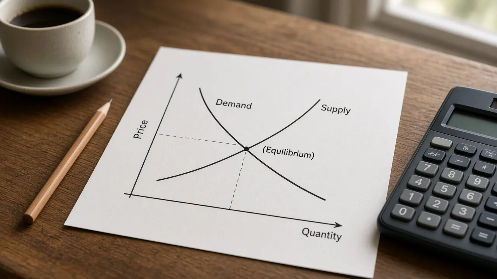

The paradox of thrift explained
Why everyone saving more at once can lower income and leave total saving no higher, with a Keynesian cross example and US saving data.

Long form, original introductions to high intent macro topics. Each piece cites authoritative sources and links back to pillars, glossary terms, and data guides.
New: the paradox of thrift. Also: types of unemployment, the federal funds rate, U-3 vs U-6 unemployment, the velocity of money, the debt to GDP ratio, the labor force participation rate, deficit vs debt, nominal vs real GDP, deflation vs disinflation, the Keynesian cross explained (the income expenditure model, equilibrium and the multiplier), what potential GDP is and how it is estimated, leading, coincident and lagging economic indicators, supply shocks versus demand shocks, the business cycle explained, neutral rate of interest (r star), stagflation, automatic stabilizers, and crowding out.
The money market and loanable funds explainer shows open market operations, money demand, government deficits, and crowding out together. The aggregate demand and aggregate supply model is the price level and real GDP picture those rates feed into.
Studying the course in unit order? The AP Macroeconomics study hub lists the six College Board units, the graphs to draw, and the explainers on this site that teach them.
Why everyone saving more at once can lower income and leave total saving no higher, with a Keynesian cross example and US saving data.
A deficit is a yearly flow, the debt is the stock built up over time, with dated US Treasury and UK ONS figures.
The share of adults working or looking for work, how it differs from the unemployment rate, and the latest US figure from FRED.

U-3 is the official unemployment rate; U-6 also counts marginally attached and part-time-for-economic-reasons workers, with the latest FRED figures.
The overnight rate banks charge each other, the effective rate versus the FOMC target, and the latest figures from FRED.

Frictional, structural and cyclical unemployment, how they add to the natural rate, and the latest US unemployment rate from FRED.
Government debt as a share of the economy, a worked example where debt rises but the ratio falls, and the latest US figure from FRED.
Nominal GDP divided by the money stock, the equation of exchange MV = PY, and the latest US M2 velocity from FRED.
Current dollar versus chained dollar GDP, the GDP deflator, a worked example, and the BEA Q3 2026 advance estimate.
Falling prices versus slower price rises, a worked example, why central banks fear deflation, and a dated PCE disinflation example.
Where planned spending meets output on the 45 degree line, a worked example, the multiplier, and recessionary and inflationary gaps.

The sustainable output benchmark behind the output gap, the three main ways it is estimated, and why estimates get revised.

Which indicators turn before, with, and after the business cycle, how the signals are read, and why one dip is not a recession call.
A demand shock shifts aggregate demand. A supply shock shifts short run aggregate supply. Why one moves prices and output together and the other does not.
The four phases, why the cycle is irregular, who dates turning points in the US and UK, and a hypothetical worked example.
The real short term rate consistent with full strength and stable inflation, with dated New York Fed LW and HLW estimates.
Both accepted drawings of a government deficit, a checker, common exam mistakes, and a dated Congressional Budget Office worked example.
Households, firms, the product and factor markets, leakages and injections, and why spending equals income equals output, with a labelled diagram and a checker.
Assets and liabilities, required and excess reserves, and how cash deposits and Fed bond purchases change the money supply, with a T account builder.
The AP Macro reserve market graph, why demand goes flat at the interest on reserve balances rate, and how the Fed moves its policy rate.
Labelling the graph, what shifts currency demand and supply, the two graph rule, and the effect on net exports.
Current account versus financial account, how to sort transactions, and why the accounts balance.
Scarcity, opportunity cost, and the difference between a bowed out curve and a straight line, with a graph you can move.
Nominal rate and the stock of money, versus the real rate and the flow of saving, with shifts for open market operations and crowding out.
Why aggregate demand slopes down, how short run and long run aggregate supply differ, and an interactive graph of shocks and gaps.
What it is, whether it still works, and how expectations and the natural rate fit in.
What QE is, how bond buying works, and how the UK and US are unwinding the stock.
Nominal versus real rates, and why an inflation adjusted policy stance matters.
FX moves, real exchange rates, and purchasing power parity.
How spending and tax changes can ripple through GDP, conditionally.
NBER dating, GDP rules of thumb, and UK discussion norms.
Treasury and gilt curves, why inversions get attention, and how to read the signal carefully.
How a simple policy rate guideline links inflation and economic slack to a suggested policy rate.
How US CPI and PCE differ, why the Fed often cites PCE, and how UK CPI/CPIH compares.
How economists compare actual GDP with potential output, and why the gap matters for inflation and policy.
What the natural rate and NAIRU mean, how estimates move, and how UK and US readers should use them.
How GDP growth and unemployment often move together, with a worked arithmetic sketch and caveats.
What each includes in the US today, why M1 jumped in 2020, and how UK notes and coin and M4ex differ.
How US and UK GDP releases differ in units, calendars, and revision habits.
When budget pressures constrain monetary policy, and how that differs from ordinary deficits or QE.
Headline counts all items. Core usually drops food and energy. How US CPI and PCE, and UK CPI and CPIH, use the split.
New here? Read About and the FAQ. For series literacy, open the data guide. Questions go to Contact (email subject [Contact: simplemacroguide]).
Prefer the short map? Start with the six topic pillars. For series literacy, see data guides.